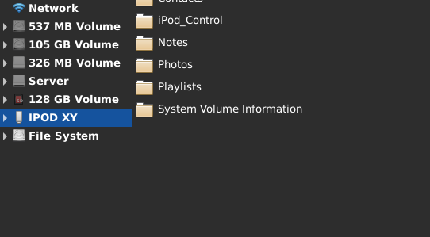
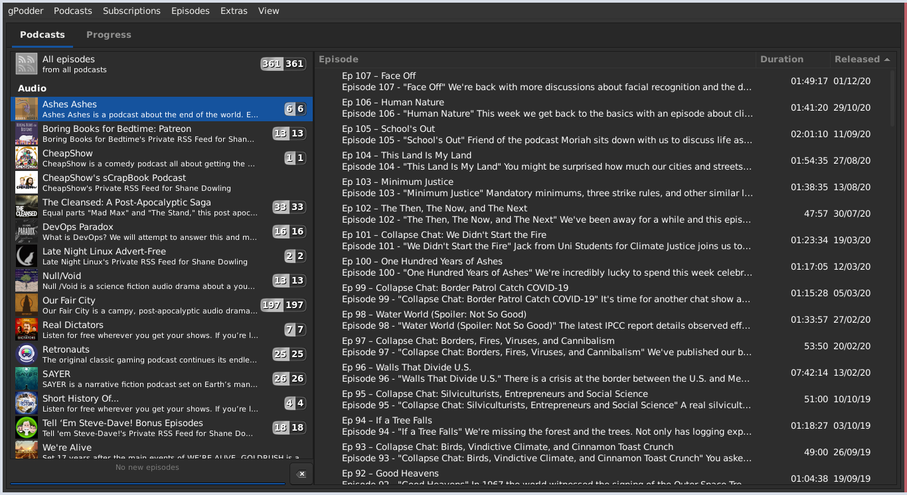
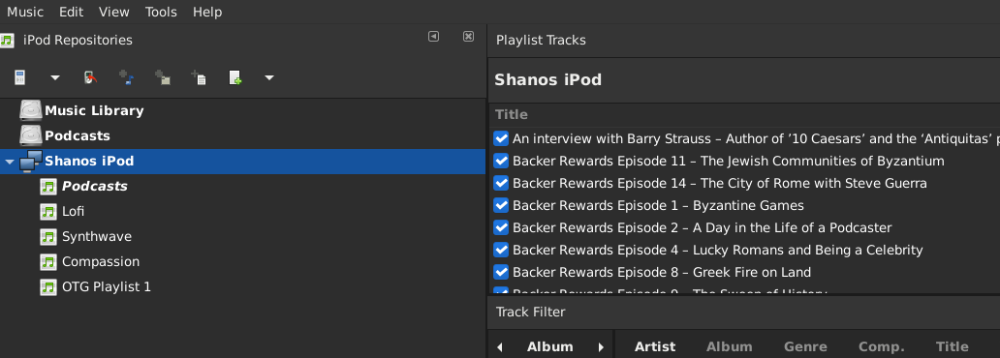
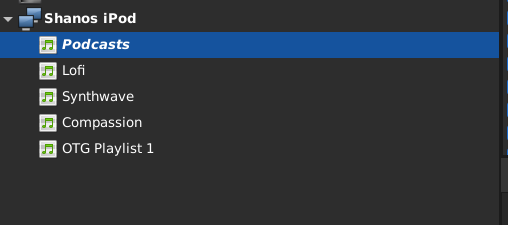
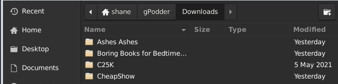

How to manage Podcasts on an iPod Classic on Linux
Posted on Sat 26 February 2022 in Digital Minimalism
After my last post generated some interesting discussion on Hacker News, I figured it was worth a little guide on how I manage my iPod Classic on a Linux machine. Thankfully some very clever people put together the drivers and software to make this a breeze, but there's a few things you need to know that took some figuring out for me. So I'll share them here.
Connecting your iPod
This should be the easiest thing to do. Simply connect your iPod to your machine and it should appear as an external device. Here's my iPod appearing under Thunar after I plug it in:
Managing Podcasts
To manage podcasts on my laptop I use gPodder. I'm a huge fan of it. The only limitation really is there may be podcasts locked to sources like Spotify, but if you're listening to Podcasts on an iPod you'll hit this limitation whatever you do. A quick `sudo apt install gpodder` should install it on most debian-based systems.
So grab some decent Podcasts via RSS and download them. On my machine the media files will appear under `~/gPodder/Downloads`
Adding Podcasts to your iPod
Once they're downloaded, it's time to add these Podcasts to your iPod, for this we need gtkpod. Again a `sudo apt install gtkpod` should do the job in terms of installation.
This is what it should look like once you've started gtkpod and connected your iPod.
You should already have a Podcasts playlist in gtkpod, if not you will need to create it. Once you do, this is the playlist to add media to and any media added will then be recognised as Podcasts on your iPod. If you don't, it gets lost in your larger media collection(and it won't have resume support). Next step is to start adding Podcasts to your playlist. You only need to do this once, then it's just a case of syncing your media. So highlight the Podcasts playlist like so:
then in the menu bar, hit "Music" then "Add Folder" and select the folder where gPodder downloaded your Podcasts to.
It should start processing your files and adding them to your iPod. It might be a bit unresponsive for a while. Repeat for any Podcasts you want to add, making sure you add these folders to the Podcast playlist in gtkpod. When done, make sure to eject your iPod in gtkpod, then eject it from your filesystem. Podcasts should now appear on your iPod!
On-going Podcast management
Now that your folders have been added, gtkpod will remember to look in these locations next time so when you want to grab any new Podcast episodes and sync them to your iPod, it's pretty simple.
- Open up gPodder and it will check for any new episodes and ask you if you wish to download them. Use the time to delete any old episodes of Podcasts you've already listened to.
- Once downloaded, mount your iPod, open gtkpod right click on your Podcasts playlist and hit "Sync Playlist with dir(s)", it'll give you a prompt to say which files with be added and removed. Hit okay and your iPod will be up to date.
And that's my process, if you have any suggestion for how you do this better, let me know!